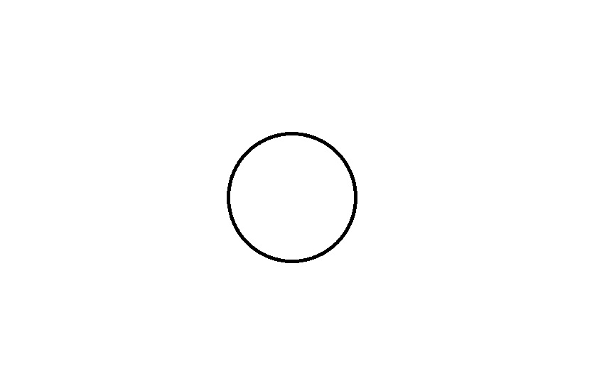
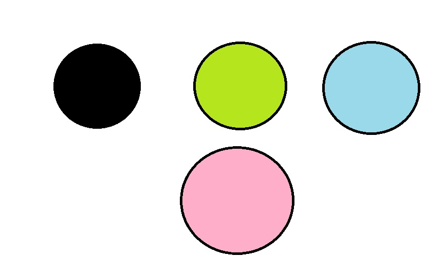
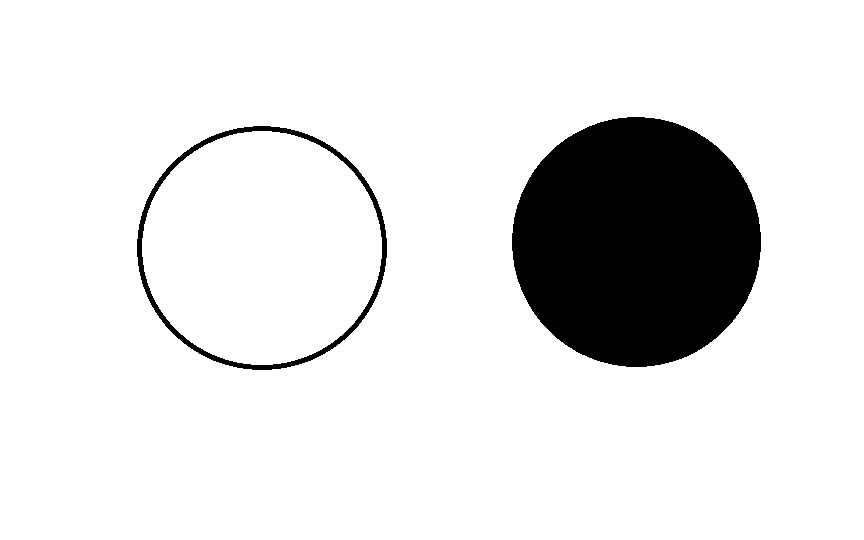

MP3 mini

MP3 grande
|
MP3 mini |
MP3 grande |
||||
|---|---|---|---|---|---|
| Capacidad de almacenamiento | 4GB (1.000 canciones) | 8GB (2.000 canciones) | 16GB (4.000 canciones) | 30GB (7.500 canciones) | 80GB (20.000 canciones) |
| Colores |  |  |  | ||
| Pantalla | LCD de 3 cm (diagonal) con retroiluminaci�n | LCD de 6 cm (diagonal) con retroiluminaci�n | |||
| Tiempo de carga | Unas 3 horas | Unas 4 horas | |||
| Unas 2 horas para alcanzar el 80% de la capacidad | |||||